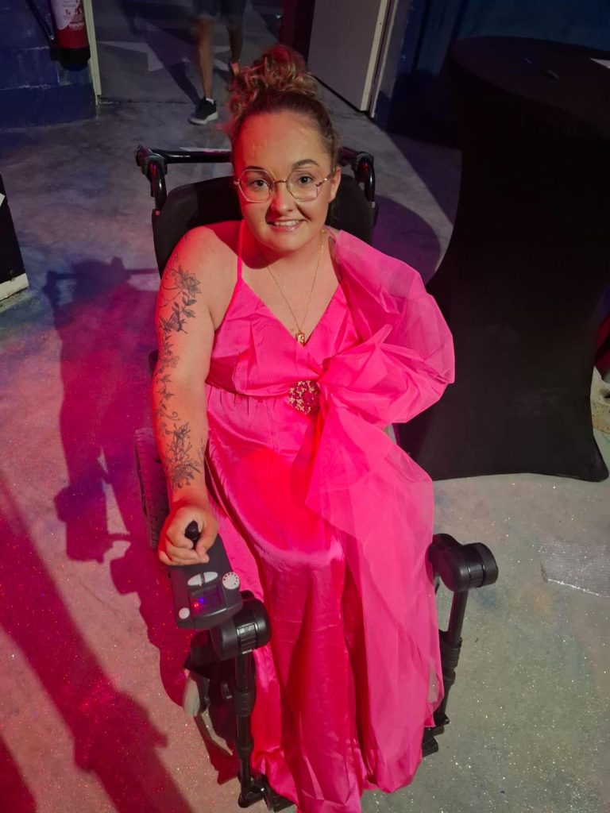
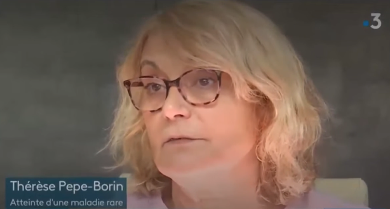
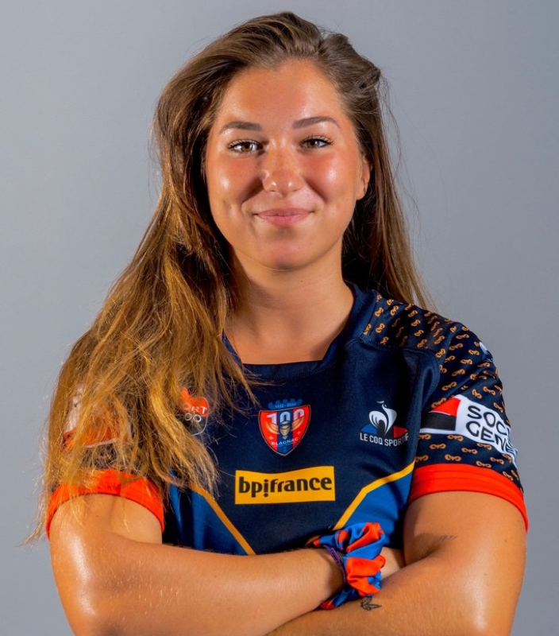

Les témoignages de patients atteints du SED offrent un aperçu précieux de la réalité quotidienne de cette maladie souvent méconnue. À travers leurs récits, chacun peut découvrir des parcours uniques, des défis surmontés et la force de celles et ceux qui vivent avec le SED. Ces histoires permettent de mieux comprendre la diversité des expériences et de créer un espace d'écoute, de partage et de solidarité.
Marjorie, 23 ans, atteinte du SED classique
« Je vis avec un syndrome d'Ehlers-Danlos de type classique et type hypermobile, diagnostiqué depuis mes 2 ans. On l'a découvert après une double luxation bilatérale des hanches. Heureusement, le pédiatre qui me suivait connaissait bien la maladie, ce qui a permis un diagnostic très précoce. J'ai eu la chance d'être prise en charge tôt mais cela n'a pas empêché la maladie d'évoluer. Malgré le diagnostic, il a été très difficile pendant longtemps de trouver des médecins réellement compétents et à l'écoute.
Dans mon enfance, les principaux problèmes étaient une peau très fragile et une hyperlaxité articulaire, avec de nombreuses entorses. En grandissant, les choses se sont compliquées. Les douleurs digestives sont devenues plus fréquentes : constipation, douleurs abdominales, vomissements… J'ai aussi commencé à avoir des luxations de plus en plus fréquentes, au point d'avoir besoin de plusieurs interventions chirurgicales. Des troubles respiratoires sont également apparus.
Aujourd'hui, je fais beaucoup de kinésithérapie pour maintenir ce que je peux. J'adapte mon quotidien autant que possible, même au travail. J'utilise un fauteuil roulant, des attelles, des vêtements compressifs… J'essaie de m'économiser autant que je peux. Avec le temps, et grâce à l'aide précieuse d'une association de patients, j'ai réussi à construire une équipe médicale solide autour de moi. Ce n'est pas facile tous les jours, mais je fais de mon mieux pour vivre avec la maladie, me soulager et garder un certain équilibre. »

Chansons de jeunes avec le SED
Des jeunes atteints du SED partagent leurs émotions et espoirs à travers leurs chansons, offrant des messages authentiques et inspirants sur leur vécu.
Interview FR3 – Vivre avec le SED
À travers cette interview sur FR3, Thérèse atteinte du SED partage son expérience, et le militantisme pour la reconnaissance de cette maladie.
Regarder
Interview de Maïlys Reynès
Maïlys, atteinte du syndrome d'Ehlers-Danlos, partage un témoignage bouleversant de résilience où le rugby a transformé ses épreuves de santé en véritables tremplins. Le rugby ne lui a pas seulement permis de reconstruire sa confiance et son corps, mais est devenu le moteur de sa vie professionnelle et personnelle. À travers son histoire, Maïlys démontre que la persévérance et la passion peuvent ouvrir des portes insoupçonnées, même face à l'adversité la plus tenace. Actuellement, elle projette de s'envoler pour le Canada afin de vivre de nouvelles expériences.
Découvrez l'interview intégrale pour vous laisser inspirer par son incroyable parcours !
Lire